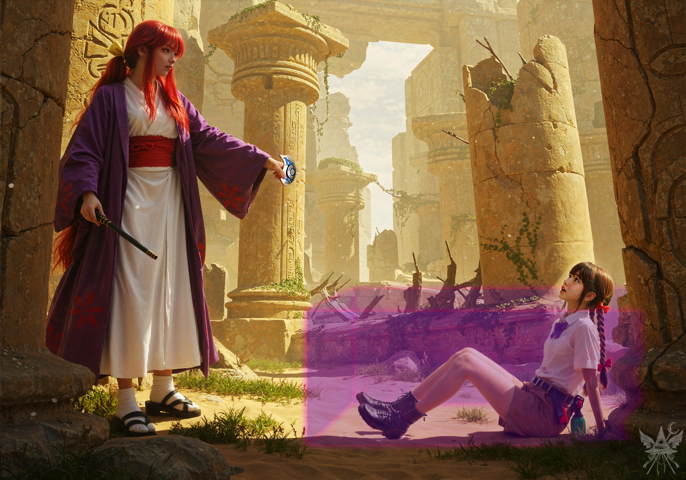
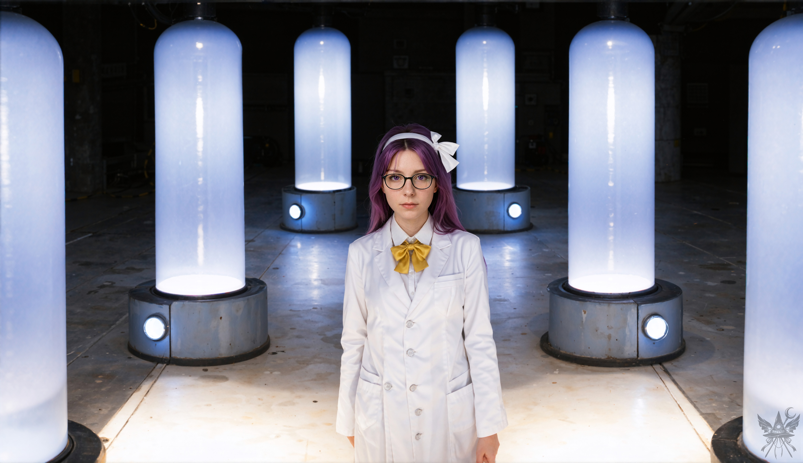

「ねえ、メデアさん。どちらを応援するかしら？ 撃つ方？ それとも撃たれる方？」
ルイズはひっそりと片目を開け、特製の煎餅をぼりぼりと齧りながら尋ねてきた。
「そうですね……手を出さないのが一番かと。殺し合いに発展する様子もありませんし」
無意識のうちに、先ほどまで手にしていた煎餅の感触を指先が探してしまう。
「ええ、その通りよ。幻想郷では日常茶飯事だわ、こんなの。実際に命を落とすことはないのだけれどね。ほら、見ていなさいな」
空を指さし、ルイズは再び煎餅の袋を差し出してきた。
弾幕の雨と爆音が空を支配する中、ふとした均衡の崩れが勝敗を決した。魔法の障壁に足を取られた小柄な技師の少女が、容赦ない砲火を浴びて墜落していく。推進器を再点火する乾いた音が響いたが、落下を和らげるのが精一杯のようだ。砂埃を上げて地面に激突し、焼け焦げた装置の残骸が吹き飛んでいく。あれだけの直撃と墜落を経験しながら、少女は煤まみれのまま力なく座り込んでいるだけで、五体満足のようだった。
そこへ、紫の衣をまとった女がゆっくりと舞い降りる。先ほどまでの狂気じみた笑みは消え失せ、冷徹な事務官のような顔つきに変わっていた。
「技師の里香。あなたを逮捕します」

古びた遺跡の乾いた空気の中、時代錯誤な和装の女が、人工的で冷たい光を放つエネルギーの輪を顕現させる。ネオンピンクの障壁に閉じ込められた敗者は、その鮮烈な光に完全に呑み込まれ、もはや逃げ場のない被支配の状況に置かれていた。砂埃が落ち着き、事務的で粛々とした事後処理の静けさが場を支配する。
「ちょっと待てっての！ なんであたいが逮捕されなきゃなんねぇのです！？」
座り込んだまま後ずさろうとする少女に対し、女は無慈悲に手錠型の拘束具を突きつける。
「産業スパイの容疑よ。大人しく同行しなさい」
「そんな簡単に降参しねぇのです！ 産業スパイだなんて知らねぇっての！ っつか、てめぇはいったい何者なんだよ！？」
逃げ場を失い、背後の障壁にぶつかって焦げた匂いを漂わせながら、少女は必死に吠えた。
「私は警察官、小兎姫よ。言い分があるなら署で聞くわ。大人しく来なさい」
流れるような手際で拘束を完了させると、小兎姫と名乗った女は少女を宙へ引き上げ、魔法の牢獄ごと空の彼方へ連れ去ってしまった。
「ほらね。危うく公務執行妨害に巻き込まれるところだったわ。……あら？ 幻想郷に警察署なんてあったかしら。まあいいわ。それじゃあ、先に進みましょうか」
ルイズは身を隠していた柱の陰から優雅に立ち上がり、遺跡の入り口へと歩き出す。
（私もいつか、あんな理不尽な戦闘に巻き込まれるのだろうか。御免被りたいわね）
遺跡の入り口は傾いた小さな神殿のような造りで、地下へと続く階段が口を開けている。足元には、場違いな金属製のナットがいくつも転がっていた。
「ルイズさん。ガイドブックには、この場所に何があると？」
「昔の独特な住居が残っているらしいのよ。本当に当時のままなのかしらね」
階段を下りきると、重く淀んだ暗闇に包まれた。だが、息苦しさに足を止めることはない。壁の感触を頼りに進むうち、指先が人工的なスイッチの形状を捉えた。冷たい蛍光灯の光が点滅しながら空間を照らし出す。
そこに広がっていたのは、古代遺跡という言葉からは程遠い、巨大な地下ガレージだった。無骨な柱、整然と並ぶ樽。隅にはディーゼル駆動を思わせる機械が鎮座し、キャビネットには未知の粉末や溶液の瓶が乱雑に詰め込まれている。
「あら、ガイドブックの記述とは随分違うみたいね。あのジェットパックの小娘、よくこんな場所を改造したものだわ。昔のままの部屋はどこかしら？」
ルイズはこちらの手を引き、無遠慮にホールの奥へと進んでいく。
（異質な空間だわ。誰が何の目的で……いや、それよりも）
地下深くに潜るにつれ、求めていた魔力の源が近づいているのを肌で感じる。フレデリカを喚び出すための条件が、ここなら揃うかもしれない。
「誰かいるのかしらー？」
ルイズがアーチの向こうへ声をかけると、白衣を纏った女が姿を現した。
「あら、お客さん？ どのようなご用件でしょうか」

土や石の匂いは完全に消え失せ、オゾンと冷却液の人工的な悪臭が鼻を突く。女の背後には巨大なエネルギータンクが何基もそびえ立ち、青白く強烈な光を放っていた。微細な泡を立てる液体の駆動音が低く響き渡り、空間全体を蒼白く冷たく染め上げている。
「観光ですよ。この遺跡の構造が素晴らしいと聞いて見に来たのですけれど……予想とだいぶ違っていて」
ルイズが適当な嘘を並べ立てる。
「ああ、ここは観光地ではなくて、私と里香の作業場なの。ご挨拶が遅れたわね。私は朝倉理香子。ここで研究をしているの。お二人は？」
理香子と名乗った女は、冷たい部屋の空気とは対照的に、柔らかな微笑みを浮かべた。
「私はメデア。こちらは旅の同行者のルイズです。本日はよろしくお願いします」
丁寧な敬語で自己紹介を済ませる。
「よろしくね」
とルイズも愛想よく会釈したが、すぐに本題を切り出した。
「ご挨拶はこのくらいにして、少し見学させてもらえないかしら？ 昔から残っている間取りを、どうしても見てみたかったのよ」
「この地下は広いんですけど、私と里香でほとんど改装してしまったの。お二人とも疲れているでしょうし、お腹も空いているんじゃないかしら？ よかったら、一緒に食事にしない？ たいしたものは出せないけれど……後で遺跡の案内もするわ」
「それは素敵な提案ね。わたし賛成。……メデアさんは？」
「もちろんです。朝倉さん、お気遣いありがとうございます」
（さっき逮捕連行された娘の同居人かしら。相方が連れ去られたというのに随分と呑気なものね。まあ、利用できるものは利用させてもらうけれど）
アーチをくぐり、研究室の奥へと案内される。壁の向こうから漏れ出す魔力の気配は、もはや隠しようもないほど濃厚になっていた。高いドーム型の天井を持つ巨大な円形の部屋を通り過ぎる。
（ここなら、間違いなく儀式を行えるわね）
「そういえば、お二人は里香を見かけなかったかしら？」
先を歩く理香子が、ふと足を止めて振り返った。
「赤いフードを被った女の子なのだけれど……『すぐ戻る』と言って出て行ったきり、ずいぶん経つから、少し心配で……」